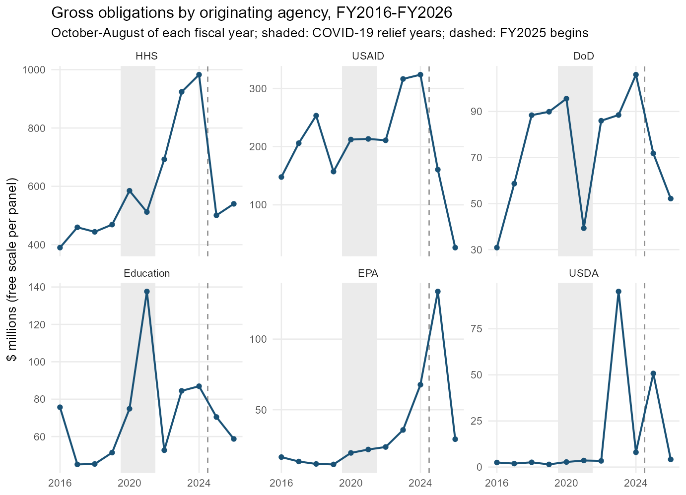
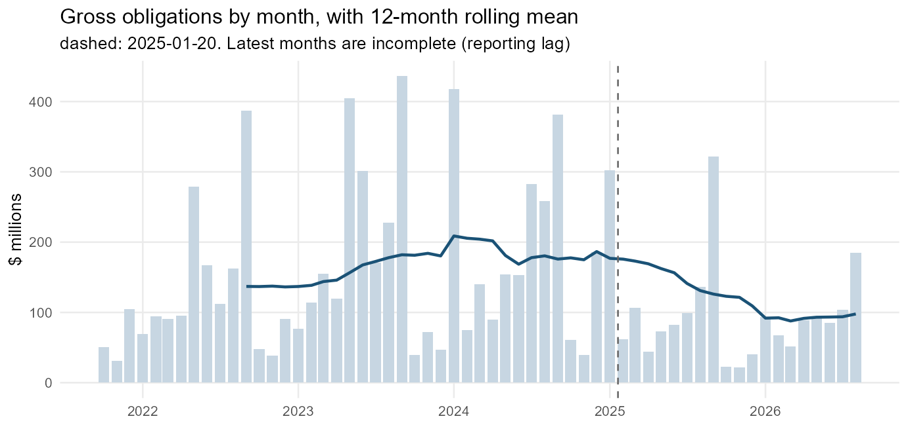
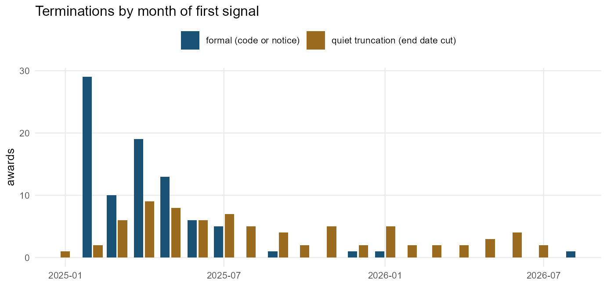
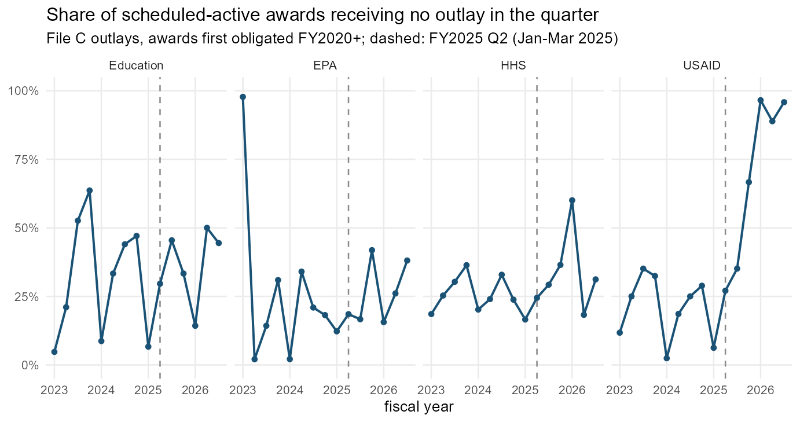

When federal funding is disrupted, the first question is usually “how much money was taken back?” The ledger answers it badly. Terminations are recorded as notices, the money often stays obligated on paper for months or years, and much of what happens to a disrupted award is never formally decided at all: the end date moves up, the next year’s funding doesn’t arrive, the cash stops. This vignette is a tutorial on reading those signals — which fields carry them, how to turn them into rates, and what each kind of disruption looks like in a real award’s history.
It is organized around a four-part taxonomy:
| type | what happens | where it shows up |
|---|---|---|
| 1. Termination | the award ends early, formally or not | termination action codes and notice text; end dates cut to “now”; early closeouts |
| 2. Reduction | the award continues, smaller | early de-obligations; ceiling cuts; shortened schedules; missing continuations |
| 3. Delay | the award continues, later | extensions; administrative actions; late or missing funding actions; active awards with no outlays |
| 4. Transfer | the work continues under another award, agency, or organization | re-awards; agency changes; transfer actions; novations |
Everything below runs offline on disruption_sample, a
bundled set of aggregates and case ledgers from a 1,000-nonprofit
pull.
library(usaspend)
library(data.table)
d <- disruption_sample
str(d$meta[c("sample", "data_end", "t0", "n_orgs_with_awards", "n_awards",
"n_transactions", "largest_recipient_share")])
#> List of 7
#> $ sample : chr "First 1,000 UEIs of the npmatch 2025NOV nonprofit crosswalk (434 with federal awards)"
#> $ data_end : Date[1:1], format: "2026-09-15"
#> $ t0 : Date[1:1], format: "2025-01-20"
#> $ n_orgs_with_awards : int 434
#> $ n_awards : int 15050
#> $ n_transactions : int 64255
#> $ largest_recipient_share: num 0.347Read the numbers as a worked example, not an estimate. The sample is the first 1,000 rows of a nonprofit crosswalk ordered by state, and one research contractor accounts for 35% of its transactions. The method generalizes; the magnitudes belong to this portfolio.
The finding that organizes everything else
Between February and August 2025, formal contract terminations in this sample went from roughly zero a year to 84. De-obligated dollars did not follow:
knitr::kable(d$signals[year >= 2021, .(year,
term_code_actions = term_code, term_notice_actions = term_text,
deobligated_M = round(deob_dollars / 1e6, 1),
early_deob_M = round(early_deob_dollars / 1e6, 1),
end_date_cuts = end_cut, ceiling_cut_M = round(ceiling_cut_dollars / 1e6, 1))])| year | term_code_actions | term_notice_actions | deobligated_M | early_deob_M | end_date_cuts | ceiling_cut_M |
|---|---|---|---|---|---|---|
| 2021 | 0 | 0 | 48.1 | 9.2 | 38 | 132.5 |
| 2022 | 2 | 1 | 23.6 | 12.9 | 26 | 61.4 |
| 2023 | 0 | 3 | 46.6 | 29.7 | 15 | 110.4 |
| 2024 | 0 | 0 | 166.6 | 151.7 | 18 | 15.3 |
| 2025 | 84 | 85 | 97.7 | 28.9 | 95 | 319.2 |
| 2026 | 2 | 8 | 53.7 | 28.0 | 18 | 177.2 |
(The 2024 de-obligation figure is one COVID-19 trial closing out; it is not a policy signal.) The reason is visible in the terminated awards themselves:
t <- d$terminations
t[kind == "formal", .(
awards = .N,
notice_was_zero_dollars = sum(change_at_notice == 0),
still_obligated = sum(status == "still obligated"),
median_days_to_deobligation = median(as.numeric(first_deob_after - t_date), na.rm = TRUE))]
#> awards notice_was_zero_dollars still_obligated median_days_to_deobligation
#> <int> <int> <int> <num>
#> 1: 86 81 54 204.5Almost every termination notice moved no money. Most terminated awards were still carrying their obligations at the end of the data; where money was eventually pulled back, it took a median of more than six months. A detector built on de-obligations misses most terminations entirely, and dates the rest by the paperwork rather than the decision.
The practical consequence: measure disruption from the non-monetary fields — action codes, end dates, ceilings, and description text — and compare their rates to a pre-period baseline.
Getting the fields
Four fields that carry these signals are part of the canonical
schema: transaction_description (the free text on each
action), base_and_all_options_value (the change to a
contract’s ceiling on this action), pop_potential_end_date,
and the awarding office (awarding_office_code,
awarding_office_name). us_disruption_flags()
reads them and adds one logical column per signal:
ex <- us_extract(my_ueis, years = 2016:2026)
tx <- us_normalize_transactions(ex$transactions, requested_uei = my_ueis)
f <- us_disruption_flags(tx)
names(f)[grepl("^dsr_", names(f))]#> [1] "dsr_term_code" "dsr_term_text" "dsr_rescinded"
#> [4] "dsr_closeout" "dsr_early_deob" "dsr_end_cut"
#> [7] "dsr_ceiling_cut" "dsr_extension" "dsr_stop_work"
#> [10] "dsr_admin" "dsr_novation" "dsr_transfer"
#> [13] "dsr_agency_change" "dsr_recipient_change"Each flag is a literal property of one action, so every count can be audited against the description text. None of them means “disruption” on its own — closeouts happen every year, and end dates move constantly on some kinds of award. Disruption is a change in the rate.
Three rules make the rates comparable:
- Compare the same months. Obligations spike every September; every table here compares February–August of each year, the window after the inauguration that all years share.
- Remove routine churn. Supply delivery orders (Defense Logistics Agency purchase orders) cancel and re-date constantly; the bundled tables exclude them.
- Mind reporting lag. Contract actions can post up to ~90 days late, assistance up to ~30. The most recent months are always incomplete.
The ten-year baseline
A disruption is measured against a trend, and the trend needs to be long enough to contain the last shock: COVID-19 relief ran through FY2020–FY2021. Gross obligations (new money committed, before claw-backs) by the agency that originated each award, over the same October–August window of each fiscal year:
tr <- d$trend_fy[agency %in% c("HHS", "USAID", "DoD", "Education", "EPA", "USDA")]
tr[, agency := factor(agency, c("HHS", "USAID", "DoD", "Education", "EPA", "USDA"))]
ggplot(tr, aes(fy, gross_obligations / 1e6)) +
annotate("rect", xmin = 2019.5, xmax = 2021.5, ymin = -Inf, ymax = Inf,
fill = "grey92") +
geom_vline(xintercept = 2024.5, colour = "grey55", linetype = "dashed") +
geom_line(colour = "#1a5276", linewidth = 0.7) +
geom_point(colour = "#1a5276", size = 1.4) +
facet_wrap(~ agency, scales = "free_y", ncol = 3) +
scale_x_continuous(breaks = c(2016, 2020, 2024)) +
labs(title = "Gross obligations by originating agency, FY2016-FY2026",
subtitle = "October-August of each fiscal year; shaded: COVID-19 relief years; dashed: FY2025 begins",
x = NULL, y = "$ millions (free scale per panel)") +
theme_minimal(base_size = 10) +
theme(panel.grid.minor = element_blank())
tot <- d$trend_fy[, .(gross_M = round(sum(gross_obligations) / 1e6)), by = fy]
tot[, change_vs_FY2024 := sprintf("%+.0f%%", 100 * (gross_M / gross_M[fy == 2024] - 1))]
tot
#> fy gross_M change_vs_FY2024
#> <int> <num> <char>
#> 1: 2016 766 -56%
#> 2: 2017 876 -49%
#> 3: 2018 966 -44%
#> 4: 2019 909 -47%
#> 5: 2020 1131 -35%
#> 6: 2021 1082 -37%
#> 7: 2022 1257 -27%
#> 8: 2023 1748 +1%
#> 9: 2024 1729 +0%
#> 10: 2025 1191 -31%
#> 11: 2026 852 -51%Three things the trend makes visible that a two-year comparison would not. The COVID-19 years are a bump, not a new level, so a drop measured against FY2021 alone would be understated. FY2023–FY2024 were this portfolio’s peak: FY2025’s fall only returns it to about its COVID-era level, while FY2026 is below FY2019. And FY2025 straddles the transition — its October–January months ran at the old pace (the EPA spike is almost entirely one $95M agreement signed on 8 January 2025, which reappears below as a quiet truncation), so the full effect lands in FY2026.
Monthly, with the inauguration marked:
m <- d$trend_month[month >= as.Date("2021-10-01")]
m[, roll12 := frollmean(gross_obligations, 12)]
ggplot(m, aes(month)) +
geom_col(aes(y = gross_obligations / 1e6), fill = "#c7d6e2", width = 25) +
geom_line(aes(y = roll12 / 1e6), colour = "#1a5276", linewidth = 0.8, na.rm = TRUE) +
geom_vline(xintercept = d$meta$t0, colour = "grey40", linetype = "dashed") +
labs(title = "Gross obligations by month, with 12-month rolling mean",
subtitle = "dashed: 2025-01-20. Latest months are incomplete (reporting lag)",
x = NULL, y = "$ millions") +
theme_minimal(base_size = 10) + theme(panel.grid.minor = element_blank())
1. Termination
A termination ends an award before its scheduled end. It appears in three forms, from most to least formal.
Formal termination. Contracts have action codes for
it: F (terminate for convenience), E (for
default), N (legal cancellation) —
dsr_term_code. Grants have no termination code; the only
formal record is the notice text in transaction_description
— dsr_term_text. Test for both, and exclude
“determination”.
Quiet truncation. The end date moves to (about)
today with no notice and, usually, no money — dsr_end_cut.
In this sample these outnumber formal terminations on assistance
awards.
Early wind-down. A spike in contract closeouts
(K, dsr_closeout) and in assistance
“adjustment to completed award” actions: awards being finished off ahead
of schedule.
d$signals[year >= 2021, .(year, term_code, term_text, end_cut,
end_cut_with_no_money = end_cut_no_deob,
closeout, rescinded)]
#> year term_code term_text end_cut end_cut_with_no_money closeout rescinded
#> <int> <int> <int> <int> <int> <int> <int>
#> 1: 2021 0 0 38 24 19 2
#> 2: 2022 2 1 26 18 14 5
#> 3: 2023 0 3 15 12 14 5
#> 4: 2024 0 0 18 16 15 5
#> 5: 2025 84 85 95 87 39 3
#> 6: 2026 2 8 18 14 27 2Timing separates the two forms sharply. Formal notices came in a wave in the first months and then stopped; quiet truncations continued at a steady rate through 2026:
tm <- t[, .N, by = .(month = as.Date(format(t_date, "%Y-%m-01")), kind)]
ggplot(tm, aes(month, N, fill = kind)) +
geom_col(position = position_dodge2(preserve = "single", padding = 0.15), width = 25) +
scale_fill_manual(values = c(formal = "#1a5276", quiet_truncation = "#9a6a1f"),
labels = c("formal (code or notice)", "quiet truncation (end date cut)"),
name = NULL) +
labs(title = "Terminations by month of first signal",
x = NULL, y = "awards") +
theme_minimal(base_size = 10) +
theme(legend.position = "top", panel.grid.minor = element_blank())
What happened to the money afterwards:
dcast(t, kind ~ status, fun.aggregate = length)
#> Key: <kind>
#> kind de-obligated new money since rescinded still obligated
#> <char> <int> <int> <int> <int>
#> 1: formal 28 1 3 54
#> 2: quiet_truncation 29 12 0 36
t[, .(awards = .N, obligated_before_M = round(sum(obligated_before) / 1e6, 1),
pulled_back_M = round(-sum(deobligated_since + pmin(change_at_notice, 0)) / 1e6, 1),
ceiling_cut_M = round(-sum(ceiling_cut) / 1e6, 1)), by = kind]
#> kind awards obligated_before_M pulled_back_M ceiling_cut_M
#> <char> <int> <num> <num> <num>
#> 1: quiet_truncation 77 1220.3 33.9 143.1
#> 2: formal 86 602.6 34.3 163.6Recipe — count terminations. Take the first formal signal per award after the reference date; add awards whose schedule was cut without one.
T0 <- as.Date("2025-01-20")
formal <- f[action_date >= T0 & (dsr_term_code | dsr_term_text),
.(t_date = min(action_date), kind = "formal"), by = award_key]
quiet <- f[action_date >= T0 & dsr_end_cut & !award_key %in% formal$award_key,
.(t_date = min(action_date), kind = "quiet_truncation"), by = award_key]
events <- rbind(formal, quiet)Case: a notice and nothing else
A USAID energy contract. Four years of incremental funding, then a single zero-dollar action — and no further record. At the end of the data the award’s full obligation still stands.
show_case <- function(k, from = "1900-01-01") {
x <- d$cases[case == k & action_date >= as.Date(from), .(action_date, mod = modification_number,
type = action_type_label,
obligation = round(federal_action_obligation),
ceiling = round(ceiling_change), end = pop_end_date,
description = substr(transaction_description, 1, 90))]
knitr::kable(x, format.args = list(big.mark = ","))
}
show_case("termination_no_deob")| action_date | mod | type | obligation | ceiling | end | description |
|---|---|---|---|---|---|---|
| 2020-10-21 | 0 | Unclassified | 19,449,419 | 56,974,990 | 2025-10-26 | USAID-PAPUA NEW GUINEA ELECTRIFICATION PARTNERSHIP (PEP) ACTIVITY BASE AWARD $56,974,990 W |
| 2023-02-21 | P00001 | Funding Only Action | 2,862,300 | 0 | 2025-10-26 | THE USAID PAPUA NEW GUINEA ELECTRIFICATION PARTNERSHIP ACTIVITY INCREMENTAL FUNDING $2,862 |
| 2023-04-04 | P00002 | Funding Only Action | 15,767,000 | 0 | 2025-10-26 | THE USAID PAPUA NEW GUINEA ELECTRIFICATION PARTNERSHIP ACTIVITY INCREMENTAL FUNDING $15,7 |
| 2023-09-11 | P00003 | Funding Only Action | 1,200,000 | 0 | 2025-10-26 | USAID PAPUA NEW GUINEA ELECTRIFICATION PARTNERSHIP ACTIVITY INCREMENTAL FUNDING OF $1,200 |
| 2024-02-15 | P00004 | Other Administrative Action | 0 | 0 | 2025-10-26 | USAID PAPUA NEW GUINEA ELECTRIFICATION PARTNERSHIP ACTIVITY |
| 2024-03-01 | P00005 | Funding Only Action | 2,400,000 | 0 | 2025-10-26 | TO INCREMENTALLY FUND THE USAID-PAPUA NEW GUINEA ELECTRIFICATION PARTNERSHIP (PEP)ACTIVITY |
| 2024-03-14 | P00006 | Other Administrative Action | 0 | 0 | 2025-10-26 | ADMIN MOD - UPDATE KEY PERSONNEL NAMES |
| 2024-08-01 | P00007 | Funding Only Action | 6,049,400 | 0 | 2025-10-26 | TO INCREMENTALLY FUND THE USAID-PAPUA NEW GUINEA ELECTRIFICATION PARTNERSHIP(PEP)ACTIVITY |
| 2024-12-22 | P00008 | Funding Only Action | 2,668,861 | 0 | 2025-10-26 | TO INCREMENTALLY FUND THE USAID-PAPUA NEW GUINEA ELECTRIFICATION PARTNERSHIP(PEP)ACTIVITY |
| 2025-03-25 | P00009 | Terminate for Convenience | 0 | 0 | 2025-03-25 | NOTICE OF TERMINATION FOR CONVENIENCE |
Case: notice first, money months later
The 2019–20 National Postsecondary Student Aid Study. The notice on 10 February 2025 cut the end date from 2028 to that day and moved no money; the termination settlement five months later de-obligated $5.9M and cut the ceiling by $33.6M. A detector keyed on de-obligations would date this termination to July.
show_case("termination_deob", from = "2024-01-01")| action_date | mod | type | obligation | ceiling | end | description |
|---|---|---|---|---|---|---|
| 2024-04-12 | P00018 | Funding Only Action | 4,884,246 | 0 | 2028-07-24 | THE 2020 NATIONAL POSTSECONDARY STUDENT AID STUDY (NPSAS:20) IS A CROSS-SECTIONAL SURVEY S |
| 2024-06-18 | P00019 | Change Order | 0 | 0 | 2028-07-24 | THE 2020 NATIONAL POSTSECONDARY STUDENT AID STUDY (NPSAS:20) IS A CROSS-SECTIONAL SURVEY S |
| 2025-02-10 | P00020 | Terminate for Convenience | 0 | 0 | 2025-02-10 | NOTICE OF TERMINATION - 2019-20 NATIONAL POSTSECONDARY STUDENT AID STUDY (NPSAS 2020) |
| 2025-07-22 | P00021 | Terminate for Convenience | -5,893,583 | -33,638,413 | 2025-02-10 | TERMINATION FOR CONVENIENCE AGREEMENT - 2019-20 NATIONAL POSTSECONDARY STUDENT AID STUDY ( |
| 2026-07-14 | P00022 | Funding Only Action | 339,004 | 339,004 | 2025-02-10 | 2019-20 NATIONAL POSTSECONDARY STUDENT AID STUDY (NPSAS 2020). ADD FUNDS MISTAKENLY RETURN |
Case: terminated, reinstated — smaller
Its successor study, NPSAS:24, was terminated the same day and
de-obligated within a week ($10.2M). In June the award was
reinstated — with new money, but its ceiling cut by
$51M and its schedule shortened from 2032 to 2027. Rescissions
(dsr_rescinded) are rare but must be tracked: the
termination did not stick, the reduction did.
show_case("termination_rescinded", from = "2024-12-01")| action_date | mod | type | obligation | ceiling | end | description |
|---|---|---|---|---|---|---|
| 2024-12-17 | P00008 | Exercise an Option | 6,180,905 | 6,180,905 | 2032-05-13 | 2024 NATIONAL POSTSECONDARY STUDENT AID STUDY (NPSAS:24) CONTRACT |
| 2025-01-30 | P00009 | Change Order | -2,740,658 | -2,740,658 | 2032-05-13 | 2024 NATIONAL POSTSECONDARY STUDENT AID STUDY (NPSAS:24) CONTRACT |
| 2025-02-10 | P00010 | Terminate for Convenience | 0 | 0 | 2025-02-10 | NOTICE OF TERMINATION - 2024 NATIONAL POSTSECONDARY STUDENT AID STUDY (NPSAS:24) CONTRACT |
| 2025-02-18 | P00011 | Funding Only Action | -10,156,110 | -10,156,110 | 2025-02-10 | 2024 NATIONAL POSTSECONDARY STUDENT AID STUDY (NPSAS:24) CONTRACT TERMINATION |
| 2025-06-30 | P00012 | Supplemental Agreement Within Scope | 3,805,461 | -50,993,439 | 2027-02-03 | 2024 NATIONAL POSTSECONDARY STUDENT AID STUDY (NPSAS:24) - REINSTATEMENT |
| 2026-03-17 | P00013 | Supplemental Agreement Within Scope | 349,981 | 349,981 | 2027-02-03 | 2024 NATIONAL POSTSECONDARY STUDENT AID STUDY (NPSAS:24) - ATO SUPPORT |
| 2026-06-03 | P00014 | Other Administrative Action | 0 | 0 | 2027-02-03 | 2024 NATIONAL POSTSECONDARY STUDENT AID STUDY (NPSAS:24). ADD DEI CLAUSE |
2. Reduction
A reduction leaves the award alive and smaller. The formal instrument is the de-obligation, but most reductions are recorded some other way.
-
Early de-obligation (
dsr_early_deob): money withdrawn while the award still has more than 60 days to run. Distinguish it from the routine closeout de-obligation after the end date, which every year produces. -
Ceiling cut (
dsr_ceiling_cut): a contract’s potential value (base plus all options) reduced. Future work removed, often with no money moving at all. -
Shortened schedule (
dsr_end_cut): the same flag as a quiet termination when the new end is “now”; a reduction when it is later. - Fewer continuations and options: multi-year grants are funded a year at a time (continuation actions), contracts by exercising options. Fewer of either is a reduction that leaves no row at all — it is visible only as a drop in the rate.
d$signals[year >= 2021, .(year, early_deob, early_deob_M = round(early_deob_dollars / 1e6, 1),
ceiling_cut, ceiling_cut_M = round(ceiling_cut_dollars / 1e6, 1),
end_cut)]
#> year early_deob early_deob_M ceiling_cut ceiling_cut_M end_cut
#> <int> <int> <num> <int> <num> <int>
#> 1: 2021 50 9.2 99 132.5 38
#> 2: 2022 100 12.9 56 61.4 26
#> 3: 2023 199 29.7 62 110.4 15
#> 4: 2024 186 151.7 64 15.3 18
#> 5: 2025 213 28.9 105 319.2 95
#> 6: 2026 173 28.0 94 177.2 18
d$action_types[action_type_label %in% c("Continuation", "New", "Exercise an Option",
"Funding Only Action")]
#> award_group action_type_label 2021 2022 2023 2024 2025 2026
#> <char> <char> <int> <int> <int> <int> <int> <int>
#> 1: assistance Continuation 374 280 312 310 212 230
#> 2: assistance New 260 258 347 282 179 180
#> 3: contract Exercise an Option 75 90 92 83 62 47
#> 4: contract Funding Only Action 129 140 147 143 106 110Early de-obligations barely moved; ceiling-cut dollars were about four times their 2021–2024 average, and continuation actions fell by a third. The cuts were made to future money.
Case: a ceiling cut to zero
An NIH communications support agreement (a blanket purchase agreement, under which orders are placed). In July 2026 its entire $49.9M ceiling was removed in a zero-dollar administrative action — nothing had been obligated under it, so no de-obligation was possible. The description cites an executive-order code.
show_case("ceiling_cut")| action_date | mod | type | obligation | ceiling | end | description |
|---|---|---|---|---|---|---|
| 2023-03-30 | 0 | Unclassified | 0 | 49,929,392 | NA | NHLBI COMMUNICATIONS, ENGAGEMENT, AND EDUCATION SUPPORT SERVICES BPA II |
| 2023-12-01 | P00001 | Other Administrative Action | 0 | 0 | NA | NHLBI COMMUNICATIONS, ENGAGEMENT, AND EDUCATION SUPPORT SERVICES BPA II |
| 2023-12-13 | P00002 | Supplemental Agreement Within Scope | 0 | 0 | NA | NHLBI COMMUNICATIONS, ENGAGEMENT, AND EDUCATION SUPPORT SERVICES BPA II |
| 2026-07-21 | P00003 | Other Administrative Action | 0 | -49,929,392 | NA | EO-14398-INV-RFO-COMMERCIAL BOT - NHLBI COMMUNICATIONS, ENGAGEMENT, AND EDUCATION SUPPORT |
Case: a quiet truncation with $95M left in place
An EPA assistance agreement awarded on 8 January 2025 for $95M through 2027. On 30 April 2025 a zero-dollar action set its end date to that day. No termination language, no de-obligation: in the obligation ledger this award still reads as $95M committed.
show_case("quiet_truncation")| action_date | mod | type | obligation | ceiling | end | description |
|---|---|---|---|---|---|---|
| 2025-01-08 | 0 | New | 9.5e+07 | NA | 2027-12-31 | DESCRIPTION:RESEARCH TRIANGLE INSTITUTE (RTI) WILL UTILIZE THE SUBSEQUENT AWARD TOTALING $ |
| 2025-04-30 | 1 | Continuation | 0.0e+00 | NA | 2025-04-30 | DESCRIPTION:RESEARCH TRIANGLE INSTITUTE (RTI) WILL UTILIZE THE SUBSEQUENT AWARD TOTALING $ |
3. Delay
Delays are the least formal category and the most informative about behavior that departs from formal decisions: awards that are not terminated or reduced, but whose money arrives late or not at all.
Administrative actions and extensions. Zero-dollar
administrative actions (dsr_admin) are where stop-work
orders and similar notices are usually filed. Extensions
(dsr_extension), which one might expect to rise,
fell — agencies were not extending the awards they were slowing
down.
d$signals[year >= 2021, .(year, admin, zero_dollar, extension, stop_work)]
#> year admin zero_dollar extension stop_work
#> <int> <int> <int> <int> <int>
#> 1: 2021 152 549 268 3
#> 2: 2022 201 698 217 3
#> 3: 2023 159 749 263 2
#> 4: 2024 131 738 253 3
#> 5: 2025 216 887 183 3
#> 6: 2026 151 771 156 0Late or missing funding actions. A multi-year grant receives its next year’s money roughly a year after the last. Anchor on each funded action of an award with more than 400 days left to run, and ask whether the next funding action arrived on time:
cn <- d$continuations[, .(N = sum(N)), by = .(due_year, outcome)]
cn <- dcast(cn, due_year ~ outcome, value.var = "N", fill = 0)
cn[, share_not_on_time := round(1 - `on time` / (`on time` + `30-120 days late` +
`missing or >120 days late`), 3)]
cn
#> Key: <due_year>
#> due_year 30-120 days late missing or >120 days late on time share_not_on_time
#> <int> <int> <int> <int> <num>
#> 1: 2021 17 197 356 0.375
#> 2: 2022 17 200 319 0.405
#> 3: 2023 19 202 700 0.240
#> 4: 2024 20 266 840 0.254
#> 5: 2025 48 253 795 0.275
#> 6: 2026 4 53 175 0.246
dcast(d$continuations[agency %in% c("HHS", "USAID", "Education"),
.(late = round(sum(N[outcome != "on time"]) / sum(N), 2)),
by = .(agency, due_year)], agency ~ due_year, value.var = "late")
#> Key: <agency>
#> agency 2021 2022 2023 2024 2025 2026
#> <char> <num> <num> <num> <num> <num> <num>
#> 1: Education NA NA 0.07 0.11 0.10 0.07
#> 2: HHS 0.25 0.26 0.17 0.21 0.22 0.11
#> 3: USAID 0.26 0.22 0.20 0.03 0.48 1.00Overall the not-on-time share barely moved, but two things changed under it: the USAID series jumps, and the moderately late category (30–120 days) more than doubled in 2025. The aggregate hides both because most anchors belong to programs that kept paying on schedule.
Active awards with no cash. The most direct evidence
of a payment delay is an award that is scheduled to be running, has not
been terminated on paper, and receives no outlays. File C account-level
data (us_fetch_outlays()) reports outlays by period for
awards starting FY2020 onward. For each quarter, take the awards whose
schedule — as known at the start of the quarter — covers the whole
quarter, and count those with no outlay:
oq <- d$outlay_quarters[fy * 10 + fq < d$meta$outlay_last_quarter[["fy"]] * 10 +
d$meta$outlay_last_quarter[["fq"]]]
all_q <- oq[, .(active = sum(active), no_cash_share = round(sum(no_cash) / sum(active), 3)),
by = .(fy, fq)][order(fy, fq)]
all_q
#> fy fq active no_cash_share
#> <int> <int> <int> <num>
#> 1: 2023 1 756 0.310
#> 2: 2023 2 720 0.281
#> 3: 2023 3 710 0.335
#> 4: 2023 4 714 0.380
#> 5: 2024 1 889 0.255
#> 6: 2024 2 864 0.304
#> 7: 2024 3 838 0.340
#> 8: 2024 4 799 0.307
#> 9: 2025 1 954 0.240
#> 10: 2025 2 915 0.280
#> 11: 2025 3 869 0.323
#> 12: 2025 4 699 0.388
#> 13: 2026 1 765 0.540
#> 14: 2026 2 716 0.300
#> 15: 2026 3 705 0.366
oa <- oq[agency %in% c("HHS", "USAID", "EPA", "Education"),
.(share = sum(no_cash) / sum(active), active = sum(active)), by = .(agency, fy, fq)]
oa[, q := fy + (fq - 1) / 4]
ggplot(oa, aes(q, share)) +
geom_vline(xintercept = 2025.25, colour = "grey55", linetype = "dashed") +
geom_line(colour = "#1a5276", linewidth = 0.7) +
geom_point(colour = "#1a5276", size = 1.3) +
facet_wrap(~ agency, ncol = 4) +
scale_y_continuous(labels = function(x) paste0(round(100 * x), "%"), limits = c(0, 1)) +
scale_x_continuous(breaks = 2023:2026) +
labs(title = "Share of scheduled-active awards receiving no outlay in the quarter",
subtitle = "File C outlays, awards first obligated FY2020+; dashed: FY2025 Q2 (Jan-Mar 2025)",
x = "fiscal year", y = NULL) +
theme_minimal(base_size = 10) + theme(panel.grid.minor = element_blank())
Two different disruptions are visible here, and the method separates them. USAID’s no-cash share rose to nearly 100% and stayed there: awards that were still open on paper stopped being paid. The all-agency spike in FY2026 Q1 (October–December 2025) coincides with the fall 2025 lapse in appropriations and reverses the next quarter: a system-wide timing disruption, not a program decision. The share also moves with the season, which is why every comparison should be same-quarter.
Case: the continuation that became two revisions
An NIH early-career grant, funded each January. The January 2025 continuation never came; instead, two zero-dollar revisions in May and June moved the end date out a year. The award was neither terminated nor reduced — its money was delayed, and the schedule absorbed it.
show_case("missed_continuation")| action_date | mod | type | obligation | ceiling | end | description |
|---|---|---|---|---|---|---|
| 2023-01-23 | 000 | Continuation | 248,979 | NA | 2026-01-31 | DEEP LEARNING ASSESSMENT OF THE RIGHT VENTRICLE: FUNCTION, ETIOLOGY, AND PROGNOSIS - ABSTR |
| 2024-01-22 | 000 | Continuation | 248,979 | NA | 2026-01-31 | DEEP LEARNING ASSESSMENT OF THE RIGHT VENTRICLE: FUNCTION, ETIOLOGY, AND PROGNOSIS - ABSTR |
| 2025-05-09 | 001 | Revision | 0 | NA | 2027-01-31 | DEEP LEARNING ASSESSMENT OF THE RIGHT VENTRICLE: FUNCTION, ETIOLOGY, AND PROGNOSIS - ABSTR |
| 2025-06-25 | 002 | Revision | 0 | NA | 2027-01-31 | DEEP LEARNING ASSESSMENT OF THE RIGHT VENTRICLE: FUNCTION, ETIOLOGY, AND PROGNOSIS - ABSTR |
4. Transfer
A transfer moves the work rather than ending it. Whether the ledger can link the old and new award depends on who the work moves to.
| the work moves to | same award id? | how to find it |
|---|---|---|
| another agency (agency closure) | yes |
dsr_agency_change; dsr_transfer action
pairs |
| another organization, contract | yes | novation, dsr_novation (action J) |
| another organization, NIH grant | yes (FAIN persists) | recipient change on the same award key |
| a new award, same organization | no | match on recipient + office + program + text |
| a new award, another organization | no | match on office + program + text, across all recipients |
Case: re-awarded to the same organization
The National Youth Tobacco Surveys contract was terminated on 1 May 2025 — the notice text cites the DOGE cost-efficiency initiative. Four months later the same organization received a new award for the same survey, from a different HHS sub-agency, at about a third of the old ceiling.
show_case("reaward_old", from = "2024-12-01")| action_date | mod | type | obligation | ceiling | end | description |
|---|---|---|---|---|---|---|
| 2024-12-10 | P00010 | Other Administrative Action | 0 | 0 | 2025-08-31 | NATIONAL YOUTH TOBACCO SURVEYS 2023-2027 |
| 2025-05-01 | P00011 | Terminate for Convenience | 0 | 0 | 2025-04-22 | EOI::IMPLEMENTING THE PRESIDENT’S DOGE COST EFFICIENCY INITIATIVE::EOI NOTICE OF TERMINATI |
| 2025-06-27 | P00012 | Other Administrative Action | 0 | 0 | 2025-04-28 | EOI::IMPLEMENTING THE PRESIDENT’S DOGE COST EFFICIENCY INITIATIVE::EOI NOTICE OF TERMINATI |
show_case("reaward_new")| action_date | mod | type | obligation | ceiling | end | description |
|---|---|---|---|---|---|---|
| 2025-09-02 | 0 | Unclassified | 2,514,725 | 4,996,564 | 2026-09-02 | NATIONAL YOUTH TOBACCO SURVEYS 2026-2027 |
| 2026-09-02 | P00001 | Supplemental Agreement Within Scope | 2,481,839 | 0 | 2027-09-02 | NATIONAL YOUTH TOBACCO SURVEYS 2026-2027 |
Nothing in either record points to the other; the new award does not cite the old number. Linking them is a matching problem. Among same-recipient awards made from 90 days before to a year after each termination, the bundled table scores candidates on description similarity, same office, same program code, and whether the new award’s text cites the old award id:
t[, .N, by = link][order(-N)]
#> link N
#> <char> <int>
#> 1: weak 104
#> 2: none 44
#> 3: possible 10
#> 4: probable 5
knitr::kable(t[link == "probable", .(t_date, recipient = substr(recipient, 1, 26),
old_award = award_key, successor, successor_start)])| t_date | recipient | old_award | successor | successor_start |
|---|---|---|---|---|
| 2025-05-01 | RESEARCH TRIANGLE INSTITUT | CONT_AWD_75D30122F14520_7523_GS00Q14OADU217_4732 | CONT_AWD_75F40125F19048_7524_75F40120A00017_7524 | 2025-09-02 |
| 2025-06-12 | RESEARCH TRIANGLE INSTITUT | CONT_AWD_75F40124F19046_7524_75F40120A00017_7524 | CONT_IDV_75F40126A00003_7524 | 2025-12-18 |
| 2025-08-07 | LA CLINICA DE FAMILIA INC | ASST_NON_06HP000612_075 | ASST_NON_06CH013159_075 | 2025-05-30 |
| 2025-09-16 | RESEARCH TRIANGLE INSTITUT | CONT_AWD_75FCMC25FJ098_7530_GS00F354CA_4732 | CONT_AWD_75FCMC25FJ128_7530_GS00F354CA_4732 | 2025-09-22 |
| 2026-05-04 | CEDARS-SINAI MEDICAL CENTE | ASST_NON_R01CA273925_075 | ASST_NON_R01CA310095_075 | 2026-05-11 |
Shared office and program code alone are not evidence — contract vehicles issue many orders from one office — so a “probable” link requires closely matching description text or an explicit citation. Few terminations in this sample found a same-organization successor.
Case: the NIH grant that followed its investigator
When a principal investigator moves, an NIH grant moves with them:
same award number, new recipient. A pull filtered on one organization’s
UEI sees only its own share of the history. These grants appear as
reconciliation breaks in the original holder’s panel
(vignette("reconciliation")):
knitr::kable(d$pi_transfers[, .(award_key, reported_total, in_sample_total,
other_recipients = substr(other_recipients, 1, 70))],
format.args = list(big.mark = ","))| award_key | reported_total | in_sample_total | other_recipients |
|---|---|---|---|
| ASST_NON_U01CA184826_075 | 1,092,731 | 1,029,943.3 | UNIVERSITY OF SOUTHERN CALIFORNIA |
| ASST_NON_R01CA255609_075 | 2,209,858 | 269,716.2 | THE METHODIST HOSPITAL RESEARCH INSTITUTE |
| ASST_NON_R01HL133286_075 | 2,187,100 | 1,750,396.4 | UNIVERSITY OF UTAH |
| ASST_NON_K08AI130366_075 | 829,320 | 629,909.0 | SLOAN-KETTERING INSTITUTE FOR CANCER RESEARCH |
| ASST_NON_R01AT001576_075 | 3,201,890 | 1,392,745.0 | UNIVERSITY OF SOUTHERN CALIFORNIA |
Case: novation
A novation keeps the contract and replaces the contractor — for example after an acquisition. It is one action with its own code:
show_case("novation")| action_date | mod | type | obligation | ceiling | end | description |
|---|---|---|---|---|---|---|
| 2018-12-03 | P00006 | Novation Agreement | 0 | 0 | 2019-07-22 | EXPERT WITNESS SERVICES |
| 2019-07-22 | P00007 | Change Order | 0 | 0 | 2020-04-23 | EXPERT WITNESS SERVICES |
| 2020-06-28 | P00001 | Change Order | -3,685 | -3,685 | 2020-04-23 | EXPERT WITNESS SERVICES |
Awards re-made to a different organization are invisible from inside a UEI-filtered sample: finding them means querying all recipients for new awards from the same office and program after each termination.
When an agency closes: what persists and what changes
USAID’s contracts and grants did not disappear from USAspending when the agency was wound down in 2025. The sample holds 366 USAID awards, 58 of them still scheduled to run on 20 January 2025:
d$usaid[c("awards", "active_at_T0", "with_action_since_T0", "terminated",
"terminated_deobligated", "moved_to_state")]
#> $awards
#> [1] 366
#>
#> $active_at_T0
#> [1] 58
#>
#> $with_action_since_T0
#> [1] 28
#>
#> $terminated
#> [1] 24
#>
#> $terminated_deobligated
#> [1] 2
#>
#> $moved_to_state
#> [1] 2
knitr::kable(d$usaid$actions_since_T0)| action_type_label | awarding_agency | funding_agency | N |
|---|---|---|---|
| Terminate for Convenience | Agency for International Development | Agency for International Development | 19 |
| Other Administrative Action | Agency for International Development | Agency for International Development | 7 |
| Adjustment to Completed Award | Agency for International Development | Agency for International Development | 5 |
| Funding Only Action | Agency for International Development | Agency for International Development | 2 |
| Revision | Agency for International Development | NA | 1 |
| Adjustment to Completed Award | Agency for International Development | NA | 1 |
| Continuation | Agency for International Development | Agency for International Development | 1 |
| Additional Work (new agreement) | Agency for International Development | Agency for International Development | 1 |
| Transfer Action | Department of State | Agency for International Development | 1 |
| Other Administrative Action | Department of State | Agency for International Development | 1 |
| Other Administrative Action | Department of State | Department of State | 1 |
Two records show the mechanics. An energy contract vehicle (an IDIQ) and one of its task orders, both held by the same organization:
show_case("usaid_idv", from = "2024-11-01")| action_date | mod | type | obligation | ceiling | end | description |
|---|---|---|---|---|---|---|
| 2024-11-14 | P00011 | Other Administrative Action | 0 | 0e+00 | NA | THE PURPOSES OF THIS MODIFICATION ARE TO CHANGE THE CONTRACTING OFFICER CHANGE THE CONTRAC |
| 2024-12-19 | P00012 | Other Administrative Action | 0 | 0e+00 | NA | THE PURPOSES OF THIS MODIFICATION IS TO ADD FAR CLAUSE 52.204-1 PROHIBITION ON UNMANNED AI |
| 2025-02-26 | P00013 | Terminate for Convenience | 0 | 0e+00 | NA | NOTICE OF TERMINATION FOR CONVENIENCE. |
| 2025-12-29 | P00014 | Other Administrative Action | 0 | 0e+00 | NA | TO RESCIND THE TERMINATION NOTICE AND REINSTATE THE PERIOD OF PERFORMANCE. |
| 2026-02-09 | P00015 | Other Administrative Action | 0 | 7e+08 | NA | ADMINISTRATIVE UPDATE FAR CLAUSES REFERENCED |
knitr::kable(d$cases[case == "usaid_task_order" & action_date >= "2025-10-01",
.(action_date, mod = modification_number, type = action_type_label,
obligation = round(federal_action_obligation), awarding_agency_name,
funding_agency_name, description = substr(transaction_description, 1, 70))],
format.args = list(big.mark = ","))| action_date | mod | type | obligation | awarding_agency_name | funding_agency_name | description |
|---|---|---|---|---|---|---|
| 2025-10-31 | P00011 | Other Administrative Action | 0 | Agency for International Development | Agency for International Development | THE PURPOSE OF THIS MODIFICATION IS TO EXTEND THE PERIOD OF PERFORMANC |
| 2026-04-30 | P00012 | Additional Work (new agreement) | 12,342,063 | Agency for International Development | Agency for International Development | THE PURPOSES OF THIS MODIFICATION ARE AS FOLLOWS: 1) EXTEND THE PERIO |
| 2026-08-06 | P00013 | Transfer Action | -14,135,167 | Department of State | Agency for International Development | ENERGY SECURE PHILIPPINES ACTIVITY |
| 2026-08-06 | P00014 | Other Administrative Action | 14,135,167 | Department of State | Agency for International Development | MODIFICATION TO ADMINISTRATIVELY MOVE FUNDING FROM USAID TO STATE SYST |
The vehicle received a termination notice in February 2025, had it rescinded in December, and appeared under the Department of State in February 2026. The task order was extended, given $12.3M of new work, and in August 2026 moved to State with a pair of equal and opposite actions: a Transfer Action of −$14.1M and an administrative action of +$14.1M.
What this shows about the database logic:
Persists:
-
The award key. USAspending’s generated unique award
id (
award_key) is built when the award is created, from the award number and the awarding agency’s code —CONT_AWD_{PIID}_{agency}_{parent PIID}_{parent agency}for contracts,ASST_NON_{FAIN}_{agency}for assistance. The7200in these contract keys is USAID’s code, and it stays there after the move. The key is an identifier, not a statement of who manages the award now. - The award number (PIID/FAIN), the parent-vehicle link, the modification sequence (P00013, P00014 continue the same series), and the recipient.
- The funding agency, where money moved. On the transferred task order the funding agency is still USAID: the money was appropriated to USAID’s accounts. (On the vehicle itself, which holds no money, both the awarding and funding fields changed to State.)
Changes:
- The awarding agency, sub-agency, and office on each action after the move. Earlier actions keep USAID. An award’s agency is therefore a property of each action, not of the award.
- Vehicle and orders move separately. The IDV and its task order moved six months apart.
- The money moves by transfer action. The −/+ pair nets to zero but inflates gross de-obligation counts; remove transfer pairs (or net by award and date) before measuring reductions.
Implications for analysis:
- Decide whether an award belongs to the agency that originated it (first action, or the code in the key) or the one that manages it now (latest action). The bundled tables use the originating agency, so USAID’s collapse shows as USAID’s; a latest-action rollup would show a smaller USAID and a slightly larger State.
- New work that State re-competes will be new awards with new keys, under State’s agency code — with no link to the USAID award it replaces. Tracing that is the cross-organization matching problem above.
- Grouping by the key’s agency code, by
awarding_agency_name, and byfunding_agency_namegives three different “USAID portfolios”. Say which one you mean.
Transaction types worth tracking
Counts of each action type over February–August, with the 2025 rate relative to the 2023–2024 average:
at <- copy(d$action_types)
at[, ratio_2025 := round(`2025` / pmax((`2023` + `2024`) / 2, 1), 2)]
knitr::kable(at[order(award_group, -ratio_2025)])| award_group | action_type_label | 2021 | 2022 | 2023 | 2024 | 2025 | 2026 | ratio_2025 |
|---|---|---|---|---|---|---|---|---|
| assistance | Adjustment to Completed Award | 8 | 26 | 39 | 37 | 68 | 29 | 1.79 |
| assistance | Revision | 424 | 860 | 1099 | 1148 | 1121 | 1070 | 1.00 |
| assistance | Continuation | 374 | 280 | 312 | 310 | 212 | 230 | 0.68 |
| assistance | New | 260 | 258 | 347 | 282 | 179 | 180 | 0.57 |
| contract | Terminate for Convenience | 0 | 1 | 0 | 0 | 84 | 2 | 84.00 |
| contract | Close Out | 19 | 14 | 14 | 15 | 39 | 27 | 2.69 |
| contract | Other Administrative Action | 214 | 224 | 190 | 156 | 235 | 175 | 1.36 |
| contract | Vendor DUNS Change | 0 | 0 | 0 | 0 | 1 | 0 | 1.00 |
| contract | Funding Only Action | 129 | 140 | 147 | 143 | 106 | 110 | 0.73 |
| contract | Exercise an Option | 75 | 90 | 92 | 83 | 62 | 47 | 0.71 |
| contract | Supplemental Agreement Within Scope | 73 | 69 | 74 | 96 | 49 | 78 | 0.58 |
| contract | Unclassified | 98 | 103 | 97 | 98 | 53 | 58 | 0.54 |
| contract | Change Order | 38 | 24 | 18 | 18 | 8 | 20 | 0.44 |
| contract | Definitize Change Order | 3 | 8 | 5 | 7 | 1 | 0 | 0.17 |
| contract | Additional Work (new agreement) | 1 | 1 | 2 | 0 | 0 | 1 | 0.00 |
| contract | Legal Contract Cancellation | 0 | 1 | 0 | 0 | 0 | 0 | 0.00 |
| contract | Transfer Action | 0 | 0 | 0 | 0 | 0 | 1 | 0.00 |
| contract | Vendor Address Change | 0 | 0 | 0 | 4 | 0 | 1 | 0.00 |
In rough order of usefulness:
| signal | field / flag | why it matters |
|---|---|---|
| terminate for convenience / default / cancellation |
action_type_code F, E, N;
dsr_term_code
|
the formal record of a termination, for contracts |
| termination notice text |
transaction_description;
dsr_term_text
|
the only formal record for grants; also catches notices filed under other codes |
| end date cut |
pop_end_date vs previous; dsr_end_cut
|
quiet termination and reduction — often with no money and no notice |
| ceiling cut |
base_and_all_options_value < 0;
dsr_ceiling_cut
|
future work removed; invisible in obligations |
| missing continuations and option exercises | assistance B, contract G rates |
reductions that leave no row; measure as a rate |
| no outlays on active awards | File C, us_fetch_outlays()
|
payment delay behind unchanged paperwork |
| closeouts and adjustments to completed awards | contract K, assistance D;
dsr_closeout
|
early wind-down |
| rescissions | dsr_rescinded |
terminations that did not stick |
| administrative actions | contract M; dsr_admin,
dsr_stop_work
|
stop-work orders and notices |
| transfer, novation, agency change | contract T, J;
dsr_agency_change
|
work moved, not ended |
| early de-obligation | dsr_early_deob |
the formal reduction — slow, and the lagging indicator |
Limits
- A UEI-filtered sample cannot see the other side of a transfer: re-awards to another organization, and the share of a moved grant held elsewhere, require queries by office and program across all recipients.
- Recent months are incomplete. Reporting lag understates the latest quarter; the File C quarter still being reported is excluded above.
- Text signals depend on agency practice. Some agencies write “notice of termination”; some write nothing. Always pair text with codes and schedule changes.
- File C covers awards from FY2020 and only agencies that report outlays (DoD reports almost none), so the no-cash measure is a subsample.
- Flags are evidence, not conclusions. Audit every count against the description text before reporting it.